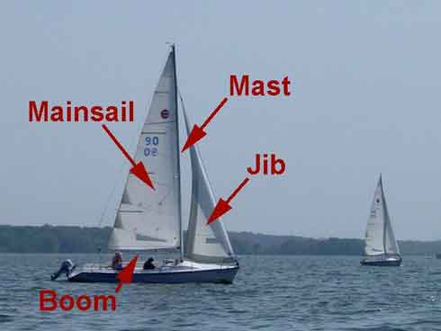

SailingForDummies.com
Sailing
Preparing Your Boat
- Perform a detailed visual check by inspecting all the standing rigging—the cables and ropes that support the mast—including the turnbuckles and cotter pins securing the rigging to the hull.
- Determine the wind direction. If your boat doesn't have some kind of wind direction indicator (windex) at the top of the mast, tie a couple nine-inch pieces of old cassette tape, VHS tape, or oiled yarn to the shrouds—the rigging cables that hold up the mast.
-
Point the boat into the wind. The idea is to have the minimum amount of wind resistance when raising the sail, with the sail straight back. In this position, the sail won't be snagging on any shrouds or any other hardware, either. This isn't always easy. The boat won't turn readily because it's not moving (under way). Do the best you can, but be prepared to work for it!
Hoisting The Sails
- Attach the sails. Secure the bottom front (tack) of the mainsail and jib to their respective shackles on the boom and the bow of the boat.
- Adjust your heading and sail trim for the wind. Sailboats cannot sail directly into the wind.
- Trim the jib sheets. Although the mainsail is hoisted first, it is the jib that is trimmed first.
-
Trim the mainsail. Let out the main sheet until the front edge just starts to luff, then pull it back just until it stops.
